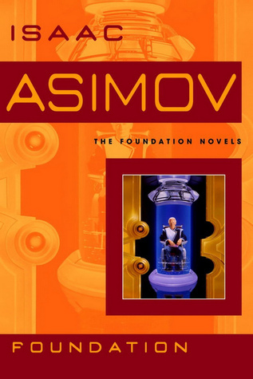

Christian Ermann
Why are you taking this course? I've been programming since I was 12 but with more of a focus on computer graphics and embedded applications. Even during my time here at Tufts, I've yet to take a course about web technologies. I have made a personal website to write about computer graphics and other things I find interesting, but that is about the extent of my web experience. I'm hoping to fill in some of the gaps in my C.S. knowledge with this course.
What are your 3 favorite foods?
- Russian Hamburgers
- Sushi
- Spam Musubis
Which one is your most favorite?
What is your favorite restaurant? I really enjoy the pork belly mac and cheese at Grassa in Portland, Oregon. My friends and I ate there many times while we were going to school at Lewis and Clark College.
What are some of your favorite books?
| Name | Cover | Author | Summary |
|---|---|---|---|
| Ender's Game | Orson Scott Card | Ender Wiggin is trained to be the commander of a space fleet to defend Earth from the Formics, but his education turns out to be more real than he anticipated. | |
| Ringworld | Larry Niven | Louis Wu sets off to explore a gigantic artificial ring with a small band of aliens, only to discover human history is much different than previously understood. | |
| Dune | Frank Herbert | Paul Atreides leads the indigineous population of the planet Arrakis in a rebellion against the Harkonnens, after the betrayal and assassination of his father by the Emperor. | |
| Foundation |  | Isaac Asimov | Hari Seldon develops a statistical method for predicting the future of Human societies, leading him to discover that the galactic empire will soon fall, as well as providing the solution to bringing Humanity back from the coming dark ages. |